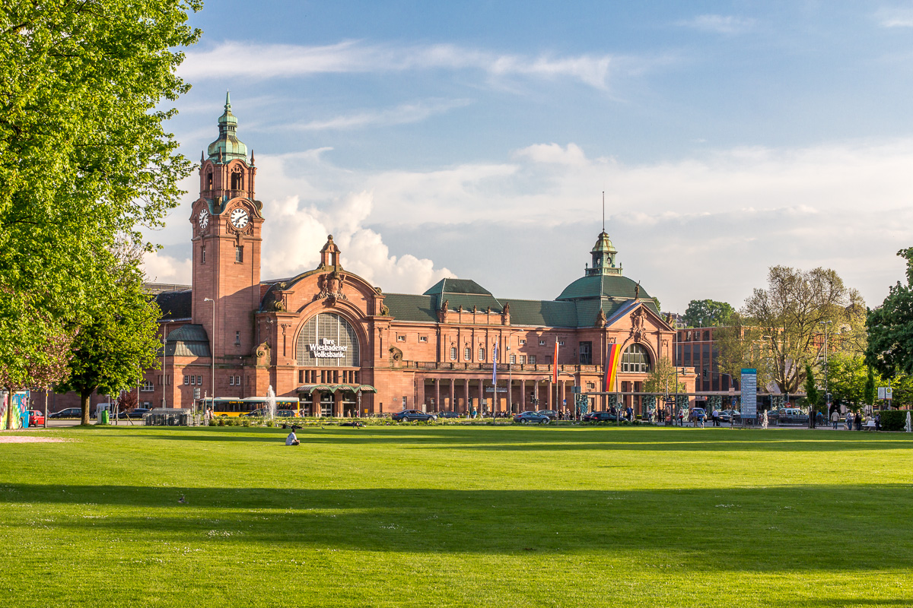

Wiesbaden Hauptbahnhof · seit 1906
Wiesbaden Hauptbahnhof
1906 als Weltkurstadt-Bahnhof eröffnet, mit Kaiserprivileg und exklusivem Erstklasse-Salon. Heute zweitgrößter Bahnhof Hessens mit täglich 46.000 Reisenden.
Wiesbaden Hauptbahnhof · seit 1906
1906 als Weltkurstadt-Bahnhof eröffnet, mit Kaiserprivileg und exklusivem Erstklasse-Salon. Heute zweitgrößter Bahnhof Hessens mit täglich 46.000 Reisenden.
Wiesbaden erhält seinen ersten Eisenbahnanschluss mit dem Taunusbahnhof. In den folgenden Jahrzehnten entstehen der Rheinbahnhof (1857) und der Ludwigsbahnhof (1878) — drei separate Kopfbahnhöfe nebeneinander.
Architekt Fritz Klingholz beginnt den Bau. Die aufwendige neobarocke Ausstattung stammt zu weiten Teilen vom Mainzer Bildhauer Franz Vlasdeck.
Am 15. November 1906 wird der Bahnhof eröffnet. Der erste planmäßige Zug fährt um 2:23 Uhr nachts ein. Der Bau löst die drei bisherigen Wiesbadener Bahnhöfe ab.
Während der alliierten Rheinlandbesetzung wird ein Bombenanschlag auf die Schalterhalle verübt. Zwei Reisende werden verletzt, einer schwer.
Nach langen Debatten wird eine ebenerdige Anbindung an die Schnellfahrstrecke Köln–Rhein/Main realisiert. Das Wiesbadener Kreuz gilt als wirtschaftlichste Lösung.
Schäden an der Salzbachtalbrücke legen den Bahnhof vom 18. Juni bis 21. Dezember fast vollständig lahm. Am 22. Dezember wird der Betrieb wieder aufgenommen.
„Kaiser Wilhelm II. hatte sich sehr um die Gestaltung des Bahnhofs bemüht." — Bernhard Hager, Wiesbadener Historiker
Kaiser Wilhelm II. reiste alljährlich im Mai nach Wiesbaden, das als seine bevorzugte Kurstadt galt. Der Bahnhof wurde bewusst auf diesen Gast ausgerichtet. Die roten und grünen Ziegel auf dem Dach gehen auf seine persönlichen Ideen zurück.
Für Kaiser und Adel wurde ein eigenes Kaisergleis (heutiges Gleis 1) errichtet. Neben Gleis 1 befand sich der Kaiserpavillon. Er wurde im Zweiten Weltkrieg zerstört — die Fassade ist am Gleis noch gut zu erkennen.
